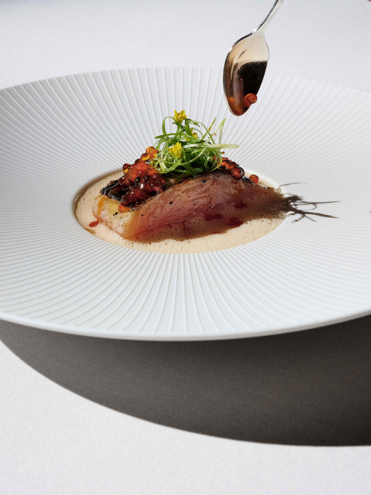

Palace
A famous fine dining restaurant in Helsinki known for modern Nordic cuisine and sea views.
Popular restaurants and cafés in Finland, from Helsinki fine dining to cozy Lapland food spots.

A famous fine dining restaurant in Helsinki known for modern Nordic cuisine and sea views.
A creative Helsinki restaurant focused on seasonal ingredients, vegetables, and Nordic flavors.
An elegant tasting-menu restaurant in Helsinki with refined Finnish and Nordic dining.
A cozy red seaside café in Helsinki loved for cinnamon buns, coffee, and waterfront charm.
A classic Helsinki café famous for pastries, chocolate, breakfast, and elegant café culture.
A warm Lapland-style restaurant in Rovaniemi serving northern ingredients and local flavors.
A popular casual food spot in Rovaniemi with modern bistro dishes and relaxed city-center dining.
A famous Tampere café known for warm doughnuts and a cozy stop near the observation tower.
A stylish rooftop restaurant in Tampere with city views, modern food, and a lively atmosphere.